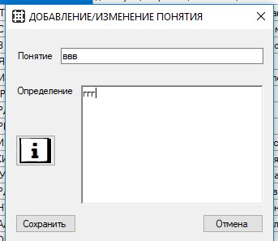

На этой форме можно добавить/изменить понятию путем внесения нового понятия и его определения в соответсующее окно,
а также возможно изменение любого понятия из загруженного словаря
Понятия и определения после ввода сверяются с уже имеющимися в словаре и при одинаковости появляется ошибка,
не позволяющая добавить их словарь понятий
